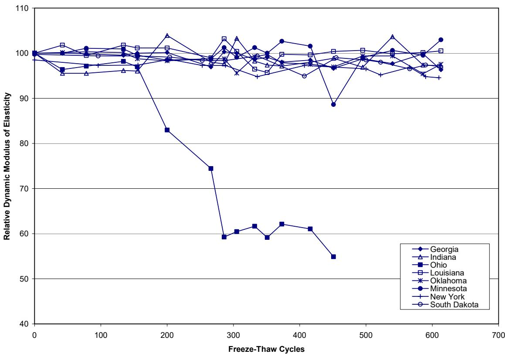
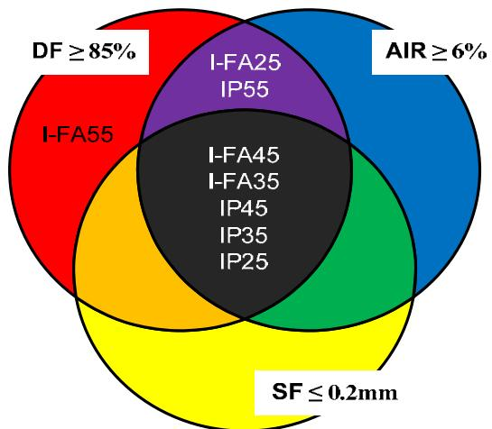
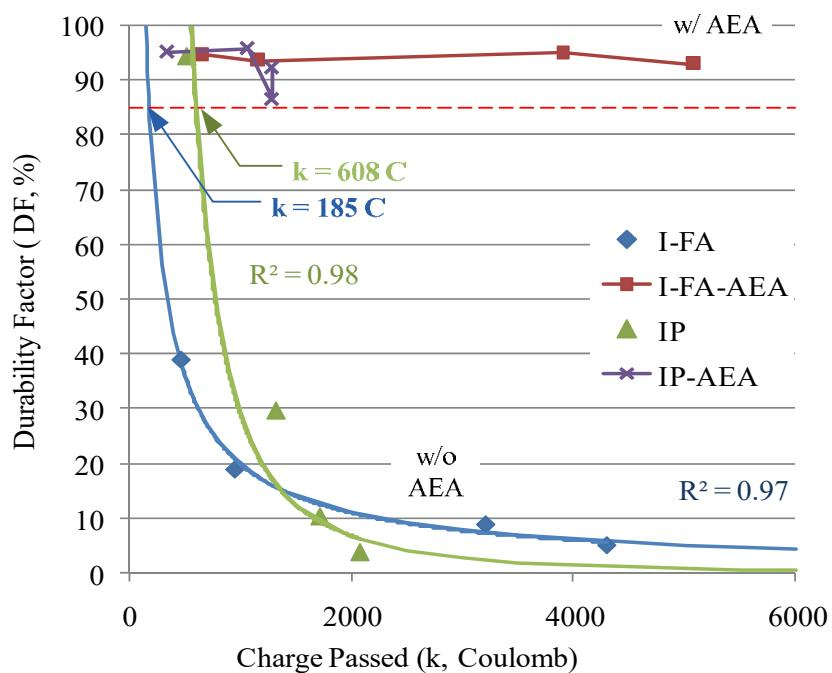
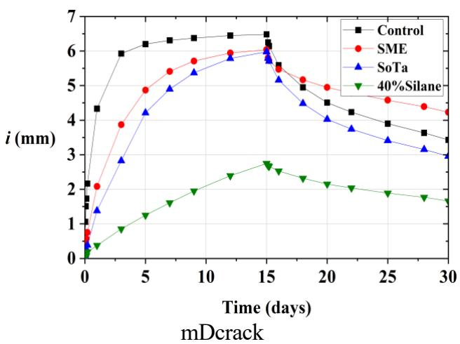
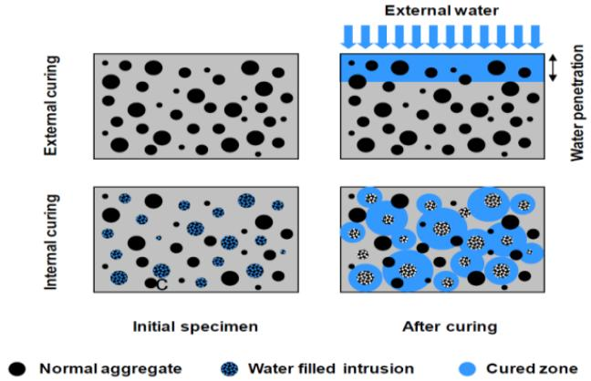
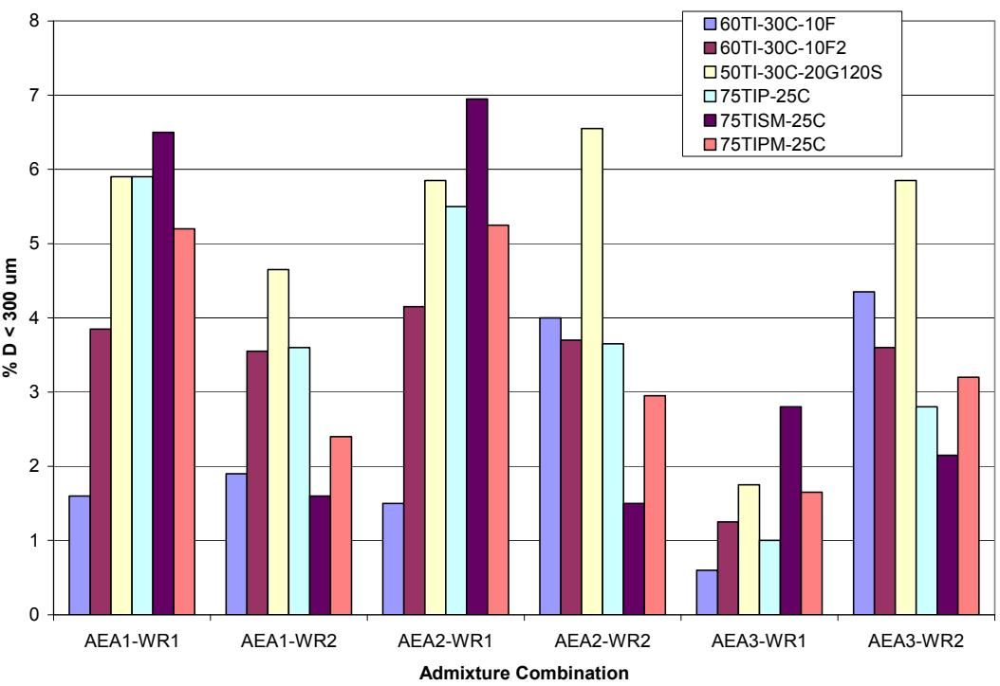

Durability & Materials-Related Distress
Durability and materials-related distress in concrete pavements arise from the complex interaction between intrinsic material properties and environmental stressors, rather than being an inherent measurable property of the concrete itself. These failures are driven by mechanisms such as freeze-thaw damage caused by ice expansion in saturated pores, chemical reactions like alkali-silica reaction or deicer-induced crystallization, and physical deterioration linked to fluid transport through the porous microstructure [1]. The susceptibility of concrete to these distresses is fundamentally governed by aggregate pore structure, which dictates water movement, saturation levels, and the internal hydraulic pressures generated during freezing cycles that can fracture particles [2] [3]. Mitigation strategies often involve modifying the microstructure through supplementary cementitious materials or air entrainment to refine pore networks and provide pressure relief for expanding ice, while surface treatments can further limit the ingress of deleterious ions [4] [5] [6]. Effective evaluation requires assessing critical performance parameters including permeability, air-void system quality, and aggregate stability to ensure the mixture can withstand specific service conditions over its design life without relying solely on structural design [7] [1].
CP Tech Center reports covering “Durability & Materials-Related Distress” also include the following subtopics: Air-Void Analysis, Freeze-Thaw Durability, Materials-Related Distress (MRD), and Transport Properties & Permeability.
Durability & Materials-Related Distress unifies failures rooted in how substances degrade or interact with their environment over time. Air-Void Analysis quantifies the microscopic air bubble system to verify freeze-thaw resistance and prevent premature material deterioration caused by inadequate void spacing, while Freeze-Thaw Durability represents the specific capacity of concrete to resist deterioration from cyclic freezing and deicing agent interactions, serving as a primary indicator of material-induced distress within the durability domain. Transport Properties & Permeability dictates the rate at which aggressive fluids and ions penetrate the concrete matrix to initiate chemical reactions and physical deterioration that manifest as material-induced distress. Together, these factors drive Materials-Related Distress (MRD), which manifests as premature concrete pavement failures driven by intrinsic material incompatibilities and adverse environmental interactions rather than structural overload or construction errors.
Sources (14)
Sub-concepts (4)
Key findings
- Found that durability failures in concrete pavements are rarely caused by a single mechanism but result from the synergistic interaction of multiple distress modes, such as alkali-silica reactivity, inadequate air-void systems, and secondary ettringite deposition [8].
- Demonstrated that nondestructive testing interpretation remains a significant bottleneck due to the need for specialized expertise, with Ground Penetrating Radar failing to image extensive paste-related distress when signal masking occurs from excessive moisture or subgrade conditions [7].
- Observed that secondary expansion products, specifically ettringite, infill originally adequate air void spaces, which compromises freeze-thaw resistance by increasing the spacing factor beyond acceptable limits and negating the benefits of air entrainment [8].
- Identified that current acceptance criteria for materials-related distress often reject aggregates with acceptable durability because fixed thresholds fail to capture specific pore structures, such as fine pores in carbonate aggregates that retain higher degrees of saturation [2].
- Revealed that low permeability alone is insufficient to guarantee freeze-thaw durability; rather, a combination of very high compressive strength and low permeability is required for non-air-entrained concrete to withstand freezing and thawing cycles [5].
- Reported that pervious concrete’s durability in cold climates is fundamentally constrained by the inherent trade-off between high void ratios required for permeability and the resulting low compressive strength and freeze-thaw resistance [9].
- Showed that penetrating sealers can trap internal moisture if they use pore-blocking mechanisms, potentially aggravating freeze-thaw distress despite reducing initial water absorption, whereas pore-lining silanes effectively reduce moisture uptake without altering air permeability [6].
- Found that durability specifications and testing procedures for recycled concrete aggregates are often misaligned with actual performance characteristics, as these materials frequently fail standard sulfate soundness tests despite demonstrating adequate freeze-thaw resistance when properly engineered [10].
General Durability Interactions
Evidence: 7 reports (7 primary)
Concrete durability is governed by complex interactions between intrinsic material properties, such as permeability and aggregate reactivity, and external environmental stressors like moisture ingress and chemical exposure [8]. While air-void systems are designed to provide internal pressure relief during freezing cycles, their protective capacity can be compromised by secondary mechanisms such as the formation of expansive crystalline deposits that fill critical voids [11] [5]. Deterioration rarely stems from a single deficiency but typically results from the compounding effects of marginal factors, including initial microcracking that facilitates moisture transport and subsequent exacerbation of freeze-thaw damage or chemical reactions [11] [8].
The figure below illustrates how alkali-silica reaction products manifest as filled cracks and rims within the concrete matrix.
 Micrograph of concrete aggregate showing ASR gel filling cracks and rims. [8]
Micrograph of concrete aggregate showing ASR gel filling cracks and rims. [8]
The image displays a polished thin section of concrete containing various aggregates embedded in a cementitious matrix, with red arrows pointing to specific features. This visual evidence demonstrates how expansive products from alkali-silica reactivity cause internal cracking that facilitates moisture ingress, a key mechanism of durability distress in concrete.
Research problem — Existing testing protocols have remained static for decades, failing to capture the complex durability interactions introduced by modern variables such as supplementary cementitious materials and multiple aggregate sources [12]. Material reactivity often overrides standard mix design protections by chemically infilling protective air voids, thereby neutralizing freeze-thaw resistance despite adequate initial entrainment [11] [8]. The industry lacks a clear understanding of whether dense concrete with low permeability can reliably substitute for air-entrained systems without compromising freeze-thaw durability [5].
The following figure illustrates the freeze-thaw performance of concrete samples from various regions to contextualize these durability challenges.

Relative Dynamic Modulus of Elasticity versus Freeze-Thaw Cycles for samples from eight states. [12]The figure plots the relative dynamic modulus of elasticity against freeze-thaw cycles to evaluate the durability of concrete cores extracted from pavements in various states. The results indicate that the Ohio pavement may not perform as well as the others tested, but the freeze-thaw durability factor still exceeds failure criteria.
State of the art — The field has transitioned from prescriptive, strength-based specifications toward performance-engineered frameworks that prioritize mechanistic-empirical design and long-term service life over rigid ingredient limits [1] [12]. Current best practices emphasize that durability distress is rarely caused by a single mechanism but results from the synergistic interaction of multiple deterioration processes, requiring simultaneous attention to material selection and construction quality [11] [8]. Industry standards are increasingly adopting rapid, field-deployable tools like the Air Void Analyzer for real-time process control, recognizing that conventional tests often fail to detect inadequate air-void spacing factors despite meeting total air content specifications [5] [8] [12].
The following figure illustrates how the durability factor varies with air content and spacing factor in air-entrained samples.

Venn diagram illustrating the relationship between durability factor, air content, and spacing factor of air-entrained samples. [5]The central intersection of these three sets contains specific sample identifiers, indicating that meeting all air structure requirements simultaneously results in high freeze-thaw durability. This visualization supports the concept by demonstrating how specific microstructural parameters, such as the spacing factor and air-void system quality, govern the concrete’s resistance to freeze-thaw damage.
Findings from the reports
- Found that rigid pavement failures are primarily driven by durability properties rather than concrete strength, necessitating a shift from prescriptive specifications to performance-engineered mixtures [1] [12].
- Observed that secondary ettringite formation frequently compromises freeze-thaw durability by filling fine air voids and increasing the spacing factor, even when initial mix designs met standard requirements [11] [8].
- Demonstrated that alkali-silica reactivity (ASR) and secondary ettringite interact synergistically to degrade the air-void system, where reactive aggregates produce gel and expansion products that negate freeze-thaw protection [8].
- Measured significant discrepancies between fresh concrete Air Void Analyzer (AVA) results and hardened RapidAir tests, with AVA consistently predicting larger spacing factors and indicating lower durability than other methods [12].
- Identified that achieving freeze-thaw resistance in non-air-entrained concrete requires a combination of very high compressive strength and low permeability, whereas air-entrained systems depend primarily on void structure parameters [5].
- Reported that premature joint deterioration is driven by locally saturated concrete and aggressive salting, which alter wetting dynamics and facilitate secondary ettringite formation in permeable joint zones [11].
- Found that optimizing mixtures for chemical durability against deicing salts can inadvertently compromise the physical air-void system necessary for freeze-thaw performance if not carefully controlled during placement [13].
- Established that transport properties are fundamental to all durability-related distresses, as the ingress of moisture and other substances is a prerequisite for deterioration mechanisms such as freeze-thaw damage and ASR [1].
- Observed that construction practices significantly impact durability outcomes, with entrained air losses occurring during paving operations and improper base drainability contributing to premature deterioration [12].
Novelty & rigor — Research has shifted from static acceptance testing to dynamic Statistical Process Control, utilizing mobile laboratories and real-time fresh concrete assessments like the Air Void Analyzer to enable immediate mix adjustments during construction [12]. Novel frameworks now correlate early-age transport properties and air-void structures with long-term field performance, challenging conventional assumptions by demonstrating that high-strength, low-permeability concrete can achieve freeze-thaw durability without traditional air entrainment [1] [5]. Methodological innovations include the use of nondestructive ultrasonic pulse velocity to quantify early-age paste quality loss and the application of low-temperature differential scanning calorimetry to predict expansive distress mechanisms associated with specific deicing salts [13] [12].
The following figure illustrates the Air Void Analyzer used for real-time fresh concrete assessments.
 Air Void Analyzer (AVA) with isolation base. [12]
Air Void Analyzer (AVA) with isolation base. [12]
The figure shows a stainless steel mobile laboratory unit containing an Air Void Analyzer, which is used to evaluate the air void system of fresh concrete on-site. This apparatus measures parameters such as total volume and size of air voids to allow real-time quality control adjustments that improve freeze-thaw durability.
Reported values
| Parameter | Value | Context | Source |
|---|---|---|---|
| durability factor | 85 percent | Mix 1 and 2 | [13] |
| percentage of cores with inadequate consolidation | 66.1% | cores evaluated | [1] |
| percentage of results exceeding acceptance limit | 14% | SAM testing results above recommended acceptance limit | [1] |
| recommended acceptance limit (SAM) | 0.30 | Super Air Meter testing | [1] |
| Super Air Meter (SAM) number | 0.21 | overall average across all projects | [1] |
| air content | 5% | locally saturated concrete | [11] |
| carbonation depth | 3mm | from the top surface | [11] |
| carbonation depth | 5mm | from the sawcut joint surface | [11] |
| entrained air void volume | 2.5% | actual measured parameters excluding ettringite fillings | [11] |
| spacing factor | 0.013” | actual measured air void parameters excluding ettringite fillings | [11] |
| air content | 6% | minimum required air entrainment (ASTM C231) | [5] |
| air content | 7% to 8.2% | measured using the pressure method | [5] |
| compressive strength | 88.0 MPa | concrete mix made with Type IP cement and without AEA (28-day) | [5] |
| durability factor | 94.3% | concrete mix made with Type IP cement and without AEA | [5] |
| air-void system adequacy failure rate | 39% | cores based on bubble spacing factor | [8] |
6 more distinct values omitted here; the full span-verified set is in the quantities sidecar.
Across the reviewed reports, concrete durability is fundamentally governed by complex interactions between transport properties, air-void system quality, and environmental exposure rather than compressive strength alone. While air entrainment provides essential protection against freeze-thaw cycles by managing internal pressure, its effectiveness is frequently compromised when secondary ettringite or ASR gel infills the finest voids, thereby increasing the spacing factor beyond protective limits. Achieving adequate durability requires balancing mix design trade-offs, such as using supplementary materials to reduce permeability or chemical reactivity while maintaining sufficient air-void stability and paste-aggregate bonding. Current industry practices are shifting from prescriptive strength-based specifications toward performance-engineered mixtures that utilize advanced testing methods to monitor transport properties and air-void parameters in real time. [13] [1] [11] [5] [8] [9] [12]
The following figure illustrates the relationship between durability performance and transport properties by plotting the durability factor against rapid chloride ion permeability.

Durability factor as a function of rapid chloride ion permeability [5]The figure plots the Durability Factor (DF, %) on the y-axis against Charge Passed (k, Coulomb) on the x-axis for concrete mixtures with and without air-entraining admixture (AEA). The data reveals that non-air entrained samples exhibit a sharp decline in durability as permeability increases, whereas air-entrained samples maintain high durability factors regardless of the charge passed.
Implications — Designers must move beyond prescriptive strength limits to performance-engineered mixtures that optimize the air-void system geometry and transport properties, as durability is a complex interaction of material composition and environmental exposure rather than an intrinsic property [1] [8]. Quality control protocols must shift from static acceptance criteria to dynamic statistical process monitoring, ensuring that trade-offs between permeability, strength, and chemical stability are managed in real-time to prevent synergistic distress mechanisms [8] [12]. Specifiers should recognize that mitigating one form of deterioration often compromises another, requiring holistic mix designs and construction practices that balance competing demands such as freeze-thaw resistance against chemical attack or joint durability [13] [11] [12].
Limitations — Standard testing methods developed for normal concrete are difficult to apply consistently to pervious concrete due to its open structure, which complicates the determination of fundamental frequency and necessitates reliance on mass loss as a more reliable durability indicator [9]. Distinguishing initiating causes from secondary effects is challenging because multiple deterioration mechanisms often coexist, making it difficult to isolate the primary driver of distress or determine whether specific chemical deposits compromise air void effectiveness or are merely a symptom of prior damage [11] [8]. Conventional quality control tests measuring only total air content are insufficient for ensuring durability, as discrepancies between different testing methodologies can lead to inconsistent assessments and the lack of a definitive quantitative threshold for acceptable concrete quality [8] [12]. Established correlations between durability properties do not hold for air-entrained concrete, indicating fundamental differences in governing mechanisms that limit the applicability of simple predictive models across all mix types [5].
Durability Mechanisms & Transport Control
Evidence: 4 reports (3 primary)
Concrete durability is determined by the complex interaction between intrinsic material properties and environmental stressors, rather than being an inherent measurable property of the concrete itself [1]. Deterioration mechanisms such as freeze-thaw damage and chemical attacks are driven by fluid transport through the porous microstructure and subsequent saturation levels [1] [6]. Controlling these transport pathways is essential for mitigating distress, which can be achieved through internal curing to reduce porosity or surface sealers that limit moisture ingress [6] [14].
The figure below illustrates how these transport mechanisms manifest through water absorption and desorption in concrete specimens.

Water absorption and desorption development of concrete specimens [6]The figure plots the cumulative water absorption (i) in millimeters against time in days for four different concrete mixtures: Control, SME, SoTa, and 40% Silane. The data shows that the mixture containing limestone coarse aggregate with higher absorption exhibits a significantly faster rate of water uptake compared to the other mixtures. Concrete treated with 40% silane demonstrates the lowest overall water absorption, indicating that surface sealers are effective at limiting moisture ingress.
Research problem — Selecting penetrating sealers requires resolving the trade-off between enhancing resistance to specific distress mechanisms and avoiding the inadvertent trapping of moisture that can aggravate freeze-thaw damage [6]. Implementing internal curing strategies demands rigorous validation to ensure that mitigating autogenous shrinkage does not compromise mechanical strength or long-term transport properties [14]. Evaluating materials-related distress necessitates the development of nondestructive testing methods capable of detecting subsurface deterioration without relying on time-consuming and subjective petrographic examinations [7].
The figure below illustrates how moisture uptake evolves over time.
 Moisture uptake results with time [6]
Moisture uptake results with time [6]
The figure plots the cumulative water absorption (i) in millimeters against the square root of time for concrete specimens treated with various sealers compared to an untreated control. The acrylic surface coating provided the greatest reduction in air permeability and significantly reduced initial water absorption, whereas treatments like LS and SC did not significantly reduce water ingress relative to the control. This data illustrates how different materials affect transport properties, which is vital for evaluating durability against distress mechanisms like freeze-thaw damage where moisture saturation levels are critical.
State of the art — Mitigation strategies increasingly utilize penetrating sealers as post-construction treatments, with a shift toward hydrophobic pore-liners that delay saturation without trapping internal moisture, unlike pore-blocking alternatives [6]. Testing protocols are moving away from air permeability measurements toward desorption and wettability assessments to better characterize the vapor exchange and liquid absorption mechanisms relevant to sealed concrete performance [6]. Internal curing using prewetted lightweight fine aggregate or superabsorbent polymers has emerged as a key strategy to mitigate intrinsic distresses by enhancing hydration, reducing porosity, and accommodating expansive reactions [14]. Detection of materials-related distress is transitioning from subjective visual inspections toward nondestructive testing methods like ground penetrating radar for network-level surveys, though widespread adoption remains constrained by a reliance on expert interpretation rather than automated analysis [7].
Findings from the reports
- Penetrating sealers substantially reduced the potential for calcium oxychloride formation by limiting chloride intrusion, though efficacy varied significantly based on the sealer’s mechanism of action [6].
- Pore-blocking agents such as soy methyl ester-polystyrene trapped internal moisture in susceptible aggregates, which adversely affected concrete resistance against frost action despite reducing initial water absorption [6].
- Hydrophobic pore-lining silanes effectively delayed critical saturation and reduced chloride ingress without significantly altering air permeability, demonstrating a superior moisture management profile compared to pore-blocking alternatives [6].
- Standard air permeability tests failed to correlate with actual water absorption or desorption performance, indicating that wettability and desaturation metrics are more accurate indicators for evaluating sealer effectiveness against materials-related distress [6].
- Internal curing using prewetted lightweight fine aggregate or superabsorbent polymers increased the degree of hydration and reduced porosity, thereby improving transport properties and mitigating autogenous shrinkage [14].
- Internal curing provided specific benefits for alkali-silica reaction by diluting the pore solution and providing space for gel expansion while maintaining freeze-thaw resistance comparable to conventional high-performance concrete [14].
- Ground Penetrating Radar successfully identified subsurface distress associated with aggregate-related failures but failed to detect extensive paste-related premature distress at other sites [7].
- GPR responses were influenced by moisture gradients and variable support beneath the pavement, which masked signals from certain types of internal cracking or excessive moisture [7].
- Nondestructive testing interpretation remained a significant bottleneck constrained by the need for specialized expertise rather than hardware limitations, with software-driven data visualization and fusion identified as critical paths to improving diagnostic reliability [7].
Novelty & rigor — Research introduces a comprehensive evaluation framework that challenges the utility of air permeability tests for penetrating sealers, establishing desaturation testing and early-age wettability measurements as superior indicators for characterizing moisture exchange mechanisms [6]. A standardized test procedure is proposed to quantify superabsorbent polymer absorption in simulated pore solutions, addressing a gap in material approval by enabling verification of internal curing agents’ compatibility with transport properties and freeze-thaw resistance [14]. The application of ground penetrating radar is innovated as a global, in-situ nondestructive technique capable of detecting subsurface materials-related distress that remains invisible during surface visual inspection [7].
Reported values
| Parameter | Value | Context | Source |
|---|---|---|---|
| antenna frequency | 1.5 GHz | high frequency antenna used in GPR testing | [7] |
| pavement section length | 298 feet | GPR testing conducted by MGPS, Inc. | [7] |
| relative dynamic modulus (RDM) | >90% | SoTa and 40% silane treatments after 140 freeze-thaw cycles | [6] |
Collectively, these findings indicate that effective durability control requires a multi-faceted approach where material selection aligns with specific failure mechanisms, such as using pore-lining sealers to manage moisture without trapping it, while acknowledging that current diagnostic tools are insufficient for reliably characterizing the internal state of distressed concrete. [7] [6] [14]
Implications — Specifiers must align sealer selection with the dominant distress mechanism rather than assuming universal protection, as pore-blocking products can exacerbate freeze-thaw damage by trapping moisture in concrete with adequate air-void systems [6]. Evaluation of sealing treatments should rely on desorption and wettability testing rather than standard air permeability metrics to ensure compatibility with specific durability risks such as D-cracking or oxychloride formation [6]. Internal curing serves as a versatile strategy for mitigating multiple failure modes by reducing fluid transport and accommodating expansive gel, provided that mixture proportioning carefully manages water-to-cementitious ratios to optimize pore structure [14]. Current nondestructive detection methods are insufficient for universal diagnosis of internal deterioration due to interpretive challenges and signal masking, necessitating advancements in data fusion technologies to enable objective assessment of paste-related distress [7].
The following figure illustrates how conventional curing compares to internal curing.

Conventional curing compared to internal curing [14]The figure illustrates the difference between external and internal curing methods in concrete, showing how water is supplied either from the surface or from pre-wetted lightweight aggregates within the mix.
Limitations — Standard air permeability testing is ineffective for characterizing sealer-treated concrete because gas transmission metrics do not correlate with liquid water exchange or desaturation rates [6]. The predictive utility of simple wettability tests diminishes over time as correlation minimizes with increased water contact, limiting long-term performance assessment in continuously saturated environments [6]. Reliable diagnosis of diverse distress types is hindered by the lack of robust software tools for data visualization and fusion, necessitating destructive coring verification to confirm findings from indirect nondestructive testing [7].
The figure below illustrates the air permeability index for concrete, highlighting the limitations of gas transmission metrics in this context.
 Air (gas) permeability index for concrete [6]
Air (gas) permeability index for concrete [6]
The figure displays a bar chart comparing the Air Permeability Index (API) of concrete specimens across three different mixtures: mAir, mOXY, and mDcr. Each mixture group is subdivided by treatment type, including a Control, 40% silane, CaSt (SoTa), and SME. The data indicates that sealer treatments generally result in higher API values compared to the control specimens within each mixture group.
Mixture Design & Supplementary Cementitious Materials
Evidence: 3 reports (2 primary)
Supplementary cementitious materials are blended with portland cement to enhance concrete durability, strength, and economic efficiency by modifying the microstructure through pozzolanic or cementitious reactions [4]. These materials refine the pore structure and reduce permeability, thereby improving resistance to sulfate attack, alkali-silica reaction, and chloride ingress [4]. The inclusion of these materials influences early-age properties such as setting time, heat of hydration, and workability depending on their chemical composition and fineness [4].
Research problem — Current prescriptive specifications and standards fail to capture the complex interactions in ternary mixtures, restricting the use of supplementary cementitious materials despite their potential to enhance durability [4]. The field lacks quantitative guidance for selecting proportions that optimize multiple cementitious systems, leading to suboptimal mix designs and material incompatibilities that compromise setting behavior and air-void structure essential for freeze-thaw resistance [4]. Predicting durability-related distresses remains difficult due to the dependency of shrinkage behavior on base cement types, necessitating preconstruction verification testing to identify incompatibilities before field application [4].
The following figure illustrates how specific admixture combinations influence the distribution of air void sizes in high-volume Class C fly ash mixtures.

Effect of admixture combination on the percent of air voids less than 300 μm for mixtures containing large amounts of Class C fly ash [4]The figure displays a bar chart comparing the percentage of air voids smaller than 300 micrometers across various admixture combinations and water reducers. Visual inspection reveals that the inclusion of specific water reducers (WR2) generally results in a lower percentage of these fine air voids compared to other combinations, indicating a coarser pore structure.
State of the art — The field currently faces contradictory guidance regarding the optimal use of supplementary cementitious materials due to significant variability in their chemical and physical properties across different sources [4]. While these materials generally enhance long-term durability by refining pore structure and reducing permeability, they introduce complex trade-offs involving early-age strength development, heat of hydration, and susceptibility to issues like deicer scaling or alkali-silica reaction depending on specific mix proportions [4]. Prevailing methods rely heavily on ASTM specifications for material characterization, yet these standards often fail to capture the synergistic or antagonistic interactions inherent in ternary systems, necessitating performance-based testing to ensure durability [4].
Findings from the reports
- Identified critical incompatibilities between Class C fly ash and low-range water reducers that caused false set and retarded strength gains, which were resolved by switching to high-range polycarboxylate water reducers or using blended cements [4].
- Demonstrated that using high-range polycarboxylate water reducers significantly improved the air-void structure necessary for freeze-thaw durability in mixtures containing high-loss-on-ignition Class F fly ash [4].
- Confirmed that nearly all ternary cementitious mixtures met general transportation strength requirements across various ages, indicating no identified technical barriers for their use in pavements and structures [4].
- Mitigated the formation of expansive calcium oxychloride when exposed to magnesium and calcium chloride deicers by incorporating high volumes of Class C fly ash, thereby reducing paste expansion rates compared to conventional mixes [13].
- Introduced trade-offs in fresh concrete properties with high-volume Class C fly ash, including delayed initial set times that required adjusted sawing schedules and potential variability in air-void structure that could marginally impact freeze-thaw durability [13].
- Highlighted that while field test methods like the Super Air Meter provided useful quality control data, their practical application for acceptance was limited compared to laboratory-based assessments of hardened properties such as surface resistivity [13].
Novelty & rigor — The research introduces a novel methodological framework that categorizes ternary cementitious mixtures based on normalized oxide components to map performance properties via contour maps, providing a predictive tool for selecting optimal material combinations beyond prescriptive specifications [4]. This approach is complemented by a stepwise regression methodology that simplifies predictive modeling by systematically eliminating insignificant input variables to identify which mineralogical components significantly influence engineering properties, thereby aiding in narrowing viable mix designs during preconstruction verification [4]. Reproducing this work requires utilizing specific supplementary cementitious materials alongside standardized testing protocols for length change and sulfate resistance, as well employing chemical characterization techniques to evaluate the complex interplay between bulk chemistry and early-age performance [4].
Across the reviewed reports, mixture design strategies utilizing ternary systems with supplementary cementitious materials effectively mitigate specific durability distresses, such as reducing expansive calcium oxychloride formation and improving air-void structure for freeze-thaw resistance, yet these benefits are counterbalanced by fresh-state challenges including false set risks and delayed setting times. The selection of specific supplementary materials and chemical admixtures is critical for managing these trade-offs, as incompatibilities between Class C fly ash and certain water reducers can cause severe retardation that requires alternative admixture strategies or adjusted scheduling to ensure proper placement and strength development. [4] [13]
The following figure illustrates how specific admixture combinations influence the distribution of fine air voids in high-volume Class F fly ash mixtures.
 Effect of admixture combination on the percent of air voids less than 300 μm for mixtures containing large amounts of Class F fly ash [4]
Effect of admixture combination on the percent of air voids less than 300 μm for mixtures containing large amounts of Class F fly ash [4]
The figure displays a bar chart comparing the percentage of air voids smaller than 300 micrometers across six different admixture combinations.
Implications — Designers should recognize that while ternary blends offer strong mechanical potential, their use requires careful management of shrinkage variability to mitigate cracking risks in pavement and bridge applications [4]. Construction practices must strictly adhere to recommended dosages for water reducers when using these mixtures to prevent severe early-age retardation that could compromise initial structural integrity [4].
Limitations — Predictive models for long-term durability in complex cementitious blends are limited by the weakening correlation between early-age strength and bulk chemistry over time, alongside incomplete assessments for specific chemical distress mechanisms due to insufficient exposure durations [4]. Laboratory-derived metrics often fail to fully capture long-term field performance because durability outcomes are heavily influenced by construction-related factors such as consolidation difficulties and curing practices, which are not adequately represented in standard mix design testing [13] [1]. Traditional prescriptive specifications based on basic workability and strength parameters offer limited insight into modern failure mechanisms, while the adoption of advanced performance-based metrics is hindered by the labor-intensive nature of testing procedures that require extensive training for repeatability [1].
Aggregate Properties & Recycled Materials
Evidence: 3 reports (3 primary)
The durability of aggregate is primarily governed by its internal pore structure, where the size, shape, and distribution of pores dictate water retention and saturation levels during environmental exposure [2]. Aggregates containing significant volumes of fine micropores are particularly vulnerable to freeze-thaw deterioration because capillary forces rapidly saturate the material while restricting the ability of trapped water to escape during freezing cycles [3]. Recycled concrete aggregates inherently possess higher porosity and water absorption due to the adhered layer of old hardened mortar, which reduces their density and strength compared to virgin materials [10]. These elevated moisture retention characteristics in recycled aggregates increase susceptibility to durability failures such as freeze-thaw damage and alkali-silica reaction unless specific mixture adjustments are implemented [10].
Research problem — Existing aggregate acceptance criteria often rely on simple chemical or physical proxies that fail to correlate with actual field performance, particularly regarding the pore structure characteristics that drive distress mechanisms like D-cracking [2]. The high cost and limited availability of effective laboratory tests for evaluating aggregate pore structure create a need for rapid, reliable assessment tools to distinguish durable materials in cold climates [3]. Widespread adoption of recycled concrete aggregates is hindered by prescriptive specifications and owner concerns regarding durability risks that current quality control measures cannot adequately address [10].
The following figure illustrates the specific distress mechanisms that current assessment methods struggle to predict.
 Frost Damage Associated with Concrete Aggregate: D-cracking at a Pavement Joint Intersection (left) and Fractured Carbonate Aggregate (right) [2]
Frost Damage Associated with Concrete Aggregate: D-cracking at a Pavement Joint Intersection (left) and Fractured Carbonate Aggregate (right) [2]
The image displays an electron micrograph of fractured carbonate aggregate, revealing internal voids and cracks within the material structure. This visual evidence illustrates the mechanism where “the pressure or stress created by the freezing water is large enough and fractures aggregat[e] particles” as described in the source context.
State of the art — Current evaluation practices for natural aggregates have shifted from relying on simple bulk metrics like absorption limits to utilizing composite assessments of pore structure and mineralogy, such as the Iowa Pore Index and X-ray diffraction, which better correlate with field performance than standard chemical specifications [2] [3]. For recycled concrete aggregates, industry adoption is currently constrained by prescriptive specifications that fail to account for unique material properties, creating a gap between the proven ability of supplementary cementitious materials to mitigate durability risks and widespread regulatory compliance [10]. The field consensus emphasizes moving toward performance-based standards that evaluate composite aggregate fractions and pore size distributions rather than fixed content limits, addressing significant uncertainties in threshold values for both natural and recycled sources [2] [10].
The following figure illustrates the Iowa Pore Index apparatus used to assess pore structure as part of these composite evaluation practices.
 Iowa Pore Index Apparatus and Control Panel [2]
Iowa Pore Index Apparatus and Control Panel [2]
The image displays a laboratory testing apparatus consisting of vertical glass tubes, pressure gauges, and a cylindrical sample chamber mounted on a metal frame. This device is the Iowa Pore Index Apparatus used to evaluate the pore system of aggregates. The apparatus bears on durability and materials-related distress by providing a method to assess aggregate properties that govern water movement and saturation levels within the concrete microstructure.
Findings from the reports
- Carbonate aggregates exhibited a finer pore structure with higher absorption and lower specific gravity than non-carbonate counterparts, creating microstructural vulnerabilities that compromised long-term freeze-thaw durability despite appearing durable in bulk tests [2].
- Current acceptance criteria based on fixed carbonate content or absorption limits rejected aggregates with acceptable durability because these metrics failed to capture the specific pore structure responsible for freeze-thaw susceptibility [2].
- The Iowa Pore Index showed a strong correlation with freezing-thawing performance in CSA A23.2-24A and ASTM C666 tests, establishing high volumes of micropores as a primary driver of poor durability and D-cracking risk [3].
- The Iowa Pore Index correlated poorly with chemical soundness results from ASTM C88 tests, indicating that different test methods captured distinct aspects of aggregate susceptibility rather than a unified durability profile [3].
- Recycled concrete aggregates frequently failed standard sodium sulfate soundness tests despite demonstrating adequate freeze-thaw resistance when properly engineered, revealing that prescriptive standards were often misaligned with the material’s actual performance characteristics [10].
- Durability issues such as alkali-silica reaction and chloride ingress in recycled concrete aggregates could be mitigated through optimized mixture designs involving mineral admixtures and controlled water-to-cementitious ratios rather than being inherent disqualifiers [10].
Novelty & rigor — Research challenges the adequacy of static carbonate content limits by demonstrating that durability is governed by specific pore structure characteristics rather than mineralogy alone, establishing a critical threshold where performance decreases significantly only when small pore index values fall below a defined limit [2]. The Iowa Pore Index test offers a rapid, cost-effective alternative for screening aggregate durability by quantifying micropore volume through pressurized water absorption, effectively distinguishing between large voids and the smaller pores associated with freezing-thawing distress [3]. Proposed methods for recycled concrete aggregates shift from prescriptive specifications to performance-based engineering by adjusting sulfate soundness tests and implementing quality indexing systems to manage variability in absorption and density [10].
Reported values
| Parameter | Value | Context | Source |
|---|---|---|---|
| carbonate content limit | 30% | current acceptance criteria for materials-related distress | [2] |
| pore size range | 0.1–1 µm | carbonate aggregates (most significant pore volume) | [2] |
| Specific Pore Index (SPI) threshold for durability failure | 27 | SPI values indicating freeze-thaw durability failure | [2] |
| Specific Pore Index (SPI) threshold for EDF correlation | 25 | SPI values showing close relationship with EDF | [2] |
Across the reviewed reports, carbonate aggregates consistently demonstrate inferior freeze-thaw durability compared to non-carbonate sources due to a finer pore structure dominated by micropores that retain water and drive distress mechanisms like D-cracking. While the Iowa Pore Index serves as an effective screening tool for estimating this pore structure and correlating with performance in specific conditioning tests, its predictive power varies across different standardized protocols, indicating that test method selection significantly influences durability assessment outcomes. Current acceptance criteria based on fixed thresholds for carbonate content or bulk absorption are increasingly viewed as insufficient because they fail to capture the specific microstructural vulnerabilities of fine-pore fractions and may unnecessarily reject durable materials. Furthermore, prescriptive durability specifications designed for natural aggregates often misalign with the performance characteristics of recycled concrete aggregates, as these materials can fail standard sulfate soundness tests while maintaining adequate freeze-thaw resistance when properly engineered. [2] [3] [10]
The following figure illustrates the relationship between micropores and the Iowa pore index.
 Relationship between micropores and Iowa pore index [3]
Relationship between micropores and Iowa pore index [3]
The data points are categorized into Carbonate and Non-carbonate groups, with the Carbonate samples generally exhibiting higher Iowa pore index values compared to the Non-carbonate samples.
Implications — Specifications relying solely on rigid mineralogical limits are inadequate for predicting durability, necessitating a shift toward integrated quality assessments that evaluate pore structure and specific gravity alongside composition [2]. Agencies should adopt rapid screening tools like the Iowa Pore Index to efficiently identify aggregates with deleterious micropore volumes, as these metrics correlate better with actual freeze-thaw performance than traditional chemical cutoffs or certain salt crystallization tests [2] [3]. The industry must transition from prescriptive standards to performance-based specifications for recycled aggregates, supported by modified testing protocols and education to overcome misconceptions regarding the inherent porosity of these materials [10].
The figure below illustrates the comparative performance of the CSA A23.2-24A standard against the Iowa Pore Index.
 Correlation between Iowa pore index and Canadian unconfined freezing-thawing mass loss for carbonate and non-carbonate aggregates. [3]
Correlation between Iowa pore index and Canadian unconfined freezing-thawing mass loss for carbonate and non-carbonate aggregates. [3]
The figure plots the relationship between the Iowa pore index and percent mass loss from a Canadian unconfined freezing-thawing test, distinguishing between carbonate (blue dots) and non-carbonate (red circles) aggregate types.
Limitations — Current laboratory tests for aggregate freeze-thaw resistance do not adequately correlate with field performance, necessitating a reliance on combined test results and historical data rather than single standardized metrics [2]. Existing pore structure identification methods often lack cost-effectiveness or universal reliability across different testing protocols, creating trade-offs between rapid supplemental tools and rigorous direct performance tests [3]. Standard soundness tests are misaligned with the actual durability behavior of recycled concrete aggregates, leading to overly restrictive specifications that hinder material adoption despite adequate engineered freeze-thaw resistance [10].
Related concepts
In this hierarchy
- Parent: CP Tech Center Reports
- Child: Air-Void Analysis
- Child: Freeze-Thaw Durability
- Child: Materials-Related Distress (MRD)
- Child: Transport Properties & Permeability
Related by shared evidence
- Freeze-Thaw Durability — shares 13 reports
- Air Entraining Agent — shares 12 reports
- CP Tech Center Reports — shares 12 reports
- Supplementary Cementitious Materials — shares 10 reports
- Carbonate Aggregate — shares 9 reports
- Degree of Saturation — shares 9 reports
- Fly Ash — shares 9 reports
- Alkali-Silica Reaction — shares 8 reports
Similar topics
- Materials-Related Distress (MRD)
- Freeze-Thaw Durability
- Transport Properties & Permeability
- D-Cracking
- Air Entraining Agent
- Low-Permeability Concrete
- Concrete Materials & Mixtures
- Pervious Concrete
References
- J. Gross, J. Weiss, T. Ley, P. Taylor, N. Weitzel, T. Van Dam, G. Smith, and C. Jones, "Performance-Engineered Concrete Paving Mixtures," National Concrete Pavement Technology Center, Iowa State University, Ames, IA, Rep. TPF-5(368), 2022. [Online]. Available: https://www.intrans.iastate.edu/wp-content/uploads/2023/04/performance-engineered_concrete_paving_mixtures_w_cvr.pdf
- F. Bektas, K. Wang, and J. Ren, "Carbonate Aggregate in Concrete," Institute for Transportation, Ames, IA, 2015. [Online]. Available: https://www.intrans.iastate.edu/wp-content/uploads/2018/03/201514.pdf
- F. Bektas, W. Cai, and K. Wang, "Aggregate Freezing-Thawing Performance Using the Iowa Pore Index," Center for Transportation Research and Education, Ames, IA, 2016. [Online]. Available: https://www.cptechcenter.org/wp-content/uploads/2018/03/aggregate_freezing-thawing_using_Iowa_pore_index_w_cvr.pdf
- P. Tikalsky, V. Schaefer, K. Wang, B. Scheetz, T. Rupnow, A. St. Clair, M. Siddiqi, and S. Marquez, "Development of Performance Properties of Ternary Mixes, Phase 1," Center for Transportation Research and Education, Ames, IA, Rep. TPF-5(117), 2007. [Online]. Available: https://www.intrans.iastate.edu/research/completed/development-of-performance-properties-of-ternary-mixes-phase-1/
- K. Wang, G. Lomboy, and R. Steffes, "Investigation into Freezing-Thawing Durability of Low-Permeability Concrete with and without Air Entraining Agent," National Concrete Pavement Technology Center, Ames, IA, 2009. [Online]. Available: https://www.intrans.iastate.edu/wp-content/uploads/2018/03/low-permeability-concrete.pdf
- J. T. Kevern, G. Adil, P. Taylor, S. Sadati, and K. Wang, "Evaluation of Penetrating Sealers for Concrete," National Concrete Pavement Technology Center, Iowa State University, Ames, IA, Rep. TR-765, 2022. [Online]. Available: https://www.intrans.iastate.edu/wp-content/uploads/2022/06/concrete_penetrating_sealers_eval_w_cvr.pdf
- S. Schlorholtz, B. Dawson, and M. Scott, "Development of In Situ Detection Methods for Materials-Related Distress (MRD) in Concrete Pavements: Phase 1," Center for Portland Cement Concrete Pavement Technology, Iowa State University, Ames, IA, Rep. CTRE 00-96, 2003. [Online]. Available: https://www.intrans.iastate.edu/wp-content/uploads/2018/03/mrd.pdf
- J. Grove, F. Bektas, and H. Gieselman, "Southeast Michigan Local Road Concrete Pavement Durability Study," National Concrete Pavement Technology Center, Ames, IA, 2006. [Online]. Available: https://www.cptechcenter.org/wp-content/uploads/2018/03/mi_pavement_durability.pdf
- V. R. Schaefer, K. Wang, M. T. Suleiman, and J. T. Kevern, "Mix Design Development for Pervious Concrete in Cold Weather Climates," CTRE, Iowa State University, Ames, IA, 2006. [Online]. Available: https://www.perviouspavement.org/downloads/Iowa.pdf
- S. Garber, R. Rasmussen, T. Cackler, P. Taylor, D. Harrington, G. Fick, M. Snyder, T. Van Dam, and C. Lobo, "A Technology Deployment Plan for the Use of Recycled Concrete Aggregates in Concrete Paving Mixtures," National Concrete Pavement Technology Center, Ames, IA, 2011. [Online]. Available: https://www.intrans.iastate.edu/wp-content/uploads/2018/03/RCA-Draft-Report_final-ssc.pdf
- P. Taylor, L. Sutter, and J. Weiss, "Investigation of Deterioration of Joints in Concrete Pavements," National Concrete Pavement Technology Center, Ames, IA, Rep. TPF-5(224), 2012. [Online]. Available: https://www.intrans.iastate.edu/wp-content/uploads/2018/03/joint_deterioration_penetrating_sealers_field_study_w_cvr.pdf
- J. Grove, G. Fick, T. Rupnow, and F. Bektas, "Material and Construction Optimization for Prevention of Premature Pavement Distress in PCC Pavements," National Concrete Pavement Technology Center, Ames, IA, Rep. TPF-5(066), 2008. [Online]. Available: https://www.intrans.iastate.edu/wp-content/uploads/2018/03/mco-final.pdf
- X. Wang, P. Taylor, and D. King, "Evaluation of Modified Concrete Mixture Proportions for the City of West Des Moines," National Concrete Pavement Technology Center, Ames, IA, 2016. [Online]. Available: https://www.intrans.iastate.edu/wp-content/uploads/2018/03/WDM_modified_concrete_mixture_proportions_w_cvr.pdf
- W. J. Weiss and L. Montanari, "Guide Specification for Internally Curing Concrete," National Concrete Pavement Technology Center, Ames, IA, Rep. TPF-5(286), 2017. [Online]. Available: https://www.intrans.iastate.edu/wp-content/uploads/2018/09/IC_guide_spec_w_cvr.pdf
Feedback on this page